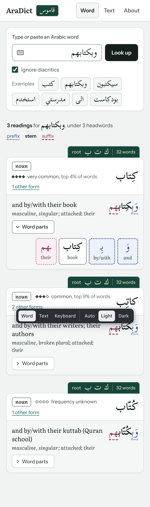
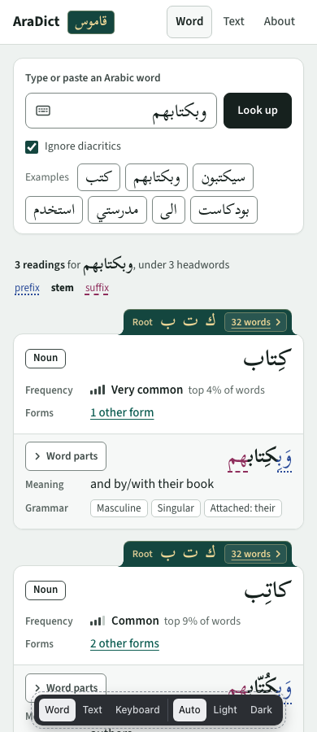
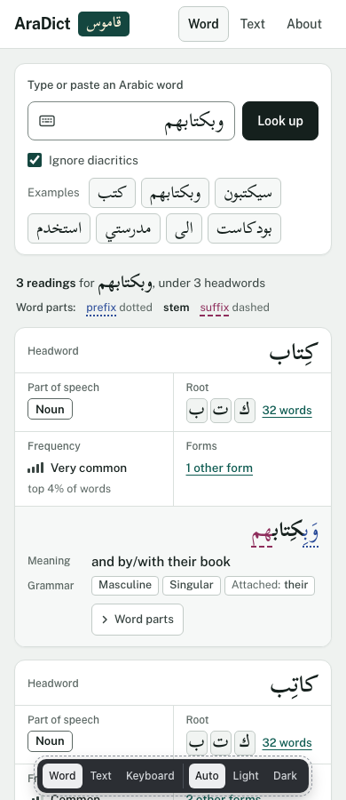
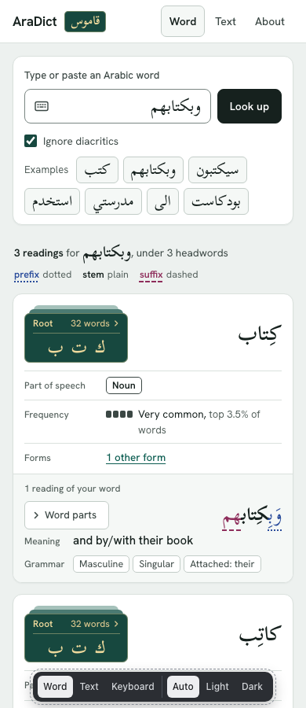

<title>AraDict Design Options</title>
<meta name="claude:viewport-fit-sides" content="cover">
<link rel="stylesheet" href="https://fonts.googleapis.com/css2?family=IBM+Plex+Sans:wght@400;500;600&display=swap">
<style>
/* Layout: a short intro, then one row of four equal cards (two on tablets, one on phones). */
:root {
  --bg: #f2f4f6; --card: #ffffff; --fg: #161b22; --muted: #57606b; --line: #dde2e7; --accent: #1f55c2; --tag: #eef2f7;
  --f: "IBM Plex Sans", system-ui, -apple-system, "Segoe UI", sans-serif;
}
@media (prefers-color-scheme: dark) { :root:not([data-theme="light"]) { --bg: #0f1216; --card: #171b21; --fg: #e7eaee; --muted: #a2abb6; --line: #2a3038; --accent: #8db1ff; --tag: #222832; color-scheme: dark } }
:root[data-theme="dark"] { --bg: #0f1216; --card: #171b21; --fg: #e7eaee; --muted: #a2abb6; --line: #2a3038; --accent: #8db1ff; --tag: #222832; color-scheme: dark }
* { box-sizing: border-box }
body { background: var(--bg); color: var(--fg); font: 15px/1.5 var(--f); padding-left: max(16px, env(safe-area-inset-left, 0px)); padding-right: max(16px, env(safe-area-inset-right, 0px)); padding-block: 28px 40px }
main { max-width: 76rem; margin: 0 auto }
h1 { font-size: 20px; font-weight: 600; margin: 0 0 6px; text-wrap: balance }
.intro { color: var(--muted); max-width: 70ch; margin: 0 0 24px }
.grid { display: grid; grid-template-columns: repeat(4, minmax(0, 1fr)); gap: 16px }
@media (max-width: 1100px) { .grid { grid-template-columns: repeat(2, minmax(0, 1fr)) } }
@media (max-width: 620px) { .grid { grid-template-columns: minmax(0, 1fr) } }
.card { background: var(--card); border: 1px solid var(--line); border-radius: 10px; display: flex; flex-direction: column; min-width: 0; overflow: hidden }
.shot { display: block; aspect-ratio: 390 / 600; overflow: hidden; border-bottom: 1px solid var(--line); background: var(--tag) }
.shot img { width: 100%; height: auto; display: block }
.body { padding: 14px 16px 16px; display: flex; flex-direction: column; gap: 8px; flex: 1 }
.name { display: flex; align-items: baseline; gap: 8px; flex-wrap: wrap }
.name h2 { font-size: 16px; font-weight: 600; margin: 0 }
.tag { font-size: 12px; font-weight: 500; color: var(--muted); background: var(--tag); border-radius: 4px; padding: 1px 6px }
.idea { font-size: 14px; color: var(--muted); margin: 0; flex: 1 }
.font { font-size: 12.5px; color: var(--muted); margin: 0 }
.actions { display: flex; gap: 14px; align-items: center; flex-wrap: wrap; margin-top: 4px; font-size: 14px }
.actions a { color: var(--accent); font-weight: 500; text-underline-offset: 3px }
.actions a.open { text-decoration: none; border: 1px solid var(--accent); border-radius: 6px; padding: 6px 12px }
.actions a:focus-visible { outline: 2px solid var(--accent); outline-offset: 2px }
.note { margin: 24px 0 0; font-size: 13px; color: var(--muted) }
</style>

<main>
  <h1>AraDict design options</h1>
  <p class="intro">N2, unchanged, and three new designs that build on it: sans-serif type, N1's clearly labelled information, and N3's grammar in boxes. The three differ mainly in how the root is shown. Open one to try it; the bar at the bottom of each design switches between the Word, Text and Keyboard screens and between light and dark.</p>

  <div class="grid">
    <article class="card">
      <a class="shot" href="n2.html" aria-label="Open N2 Clothbound"></a>
      <div class="body">
        <div class="name"><h2>N2 · Clothbound</h2><span class="tag">previous favourite</span></div>
        <p class="idea">The starting point: Arabic facing its English in every row, grammar in italic, and the root stamped in gilt on a green tab on top of each entry box.</p>
        <p class="font">Latin fonts: Literata and Instrument Sans</p>
        <div class="actions"><a class="open" href="n2.html">Open design</a><a href="n2-desk.png">Desktop screenshot</a></div>
      </div>
    </article>

    <article class="card">
      <a class="shot" href="m1.html" aria-label="Open M1 Cloth Tab"></a>
      <div class="body">
        <div class="name"><h2>M1 · Cloth Tab</h2><span class="tag">root: refined tab</span></div>
        <p class="idea">N2's green tab with gold lettering, now sans-serif, curving out of the box edge with "Root ك ت ب" and a "32 words ›" link. Inside, frequency, forms, meaning and grammar each have a labelled row.</p>
        <p class="font">Latin font: Source Sans 3</p>
        <div class="actions"><a class="open" href="m1.html">Open design</a><a href="m1-desk.png">Desktop screenshot</a></div>
      </div>
    </article>

    <article class="card">
      <a class="shot" href="m2.html" aria-label="Open M2 Letter Tray"></a>
      <div class="body">
        <div class="name"><h2>M2 · Letter Tray</h2><span class="tag">root: quiet tiles</span></div>
        <p class="idea">Each entry heading is a row of labelled fields (part of speech, measure, root, frequency, forms) with the headword closing it on the right. The root is plain letter tiles in the entry's own colours, with "32 words" as the link.</p>
        <p class="font">Latin font: Public Sans</p>
        <div class="actions"><a class="open" href="m2.html">Open design</a><a href="m2-desk.png">Desktop screenshot</a></div>
      </div>
    </article>

    <article class="card">
      <a class="shot" href="m3.html" aria-label="Open M3 Card Index"></a>
      <div class="body">
        <div class="name"><h2>M3 · Card Index</h2><span class="tag">root: card stack</span></div>
        <p class="idea">Every fact in its own labelled cell. The root is a small stack of green index cards beside the headword, since Arabic dictionaries file words under their root; the cards behind fan out when you point at it.</p>
        <p class="font">Latin font: Hanken Grotesk</p>
        <div class="actions"><a class="open" href="m3.html">Open design</a><a href="m3-desk.png">Desktop screenshot</a></div>
      </div>
    </article>
  </div>

  <p class="note">Prototype for issue #14. All designs show real CAMeL dictionary output; the English glosses are hand-cleaned for these examples. Earlier options (D, N1, N3) are kept in this artifact's version history.</p>
</main>
